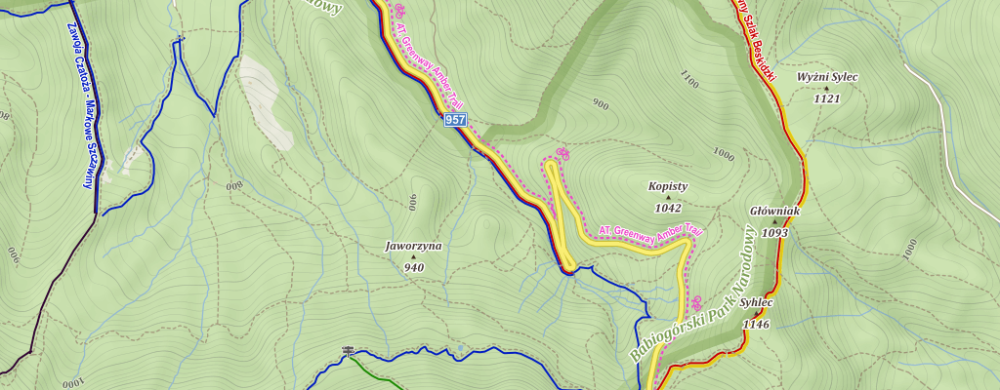

Recommendations
OpenStreetMap products
There are many excellent products based on OpenStreetMap data
Online
- Main OpenStreetMap website – its primary purpose is to serve community of mappers, but it has a worldwide map, search and routing.
- Opening hours map – displays opening hours data (note permalink on the bottom right)
- Generate SVG map from OpenStreetMap data – will generate within browser map of any small area
- mapy.cz – interesting map style based primarily on OSM data. Especially tourist map version is especially useful with marked signed hiking routes.
- Map comparison website by BBBike – allows to compare different maps made from OSM data with maps made from data owned by Google, Yandex and others.

OpenStreetMap data and NASA elevation data displayed using mapy.cz styling. Location displayed here is the place where my father explained to me how maps are working. It is one of my earliest memories.
Android applications
- mapy.cz – allows to download maps for and offline use. Especially useful during hiking along signed routes, but has also functions like routing (Windy Maps is the same program under a different brand). Map style the same as on mapy.cz website.
- OsmAnd – offline maps, very powerful application, free version allows downloading limited map count but it is enough for a normal use.
Editing OpenStreetMap
- StreetComplete – a specialized editor, usage requires an Android phone and ability to read. No knowledge about OpenStreetMap and its tagging system is required.
- iD – in browser editor, default on OpenStreetMap website available after using the "Edit" button. Allows editing of all OSM data, includes a walkthrough for new users and interface that is intended to be easy to use for newbies.
- JOSM – more complicated but extremely powerful editor. It is a standalone program. Worth using by anybody editing regularly but with complicated interface.
- Vespucci – mobile editor for Android with direct access to all OpenStreetMap data.
Advanced OpenStreetMap data usage
- overpass turbo – a tool to filter, visualise and download raw data. Extremely powerful and highly useful. I made a tutorial, intended to be useful without any OpenStreetMap or programming knowledge.
- Taginfo – provides statistics about OSM tags (for example list of popular surface values, tags commonly used to add detail to motorways, map where shops are mapped (note that for example some dots in Antarctica are correctly mapped objects in research stations), who is using hospital data and other statistics.
- osm tag history – shows how usage of specific tags changed over time
- OSM Deep History – view history of tags on an OpenStreetMap object
- OSM History Viewer – view history of tags on an OpenStreetMap object, shows also old geometries for ways and nodes
Other
- A/B street – generates detailed road network from OSM data (simulation of individual lanes on roads). A traffic-oriented city management computer game and/or tool for simulating traffic. Great author, nice project to contribute if someone is learning Rust (contributions from Rust newbies also are welcomed there)